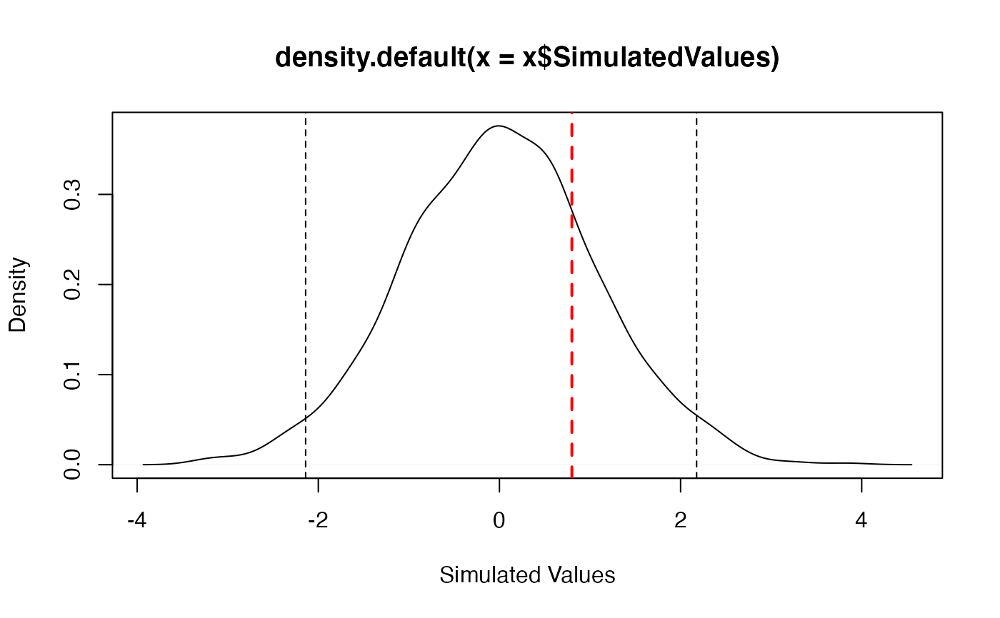
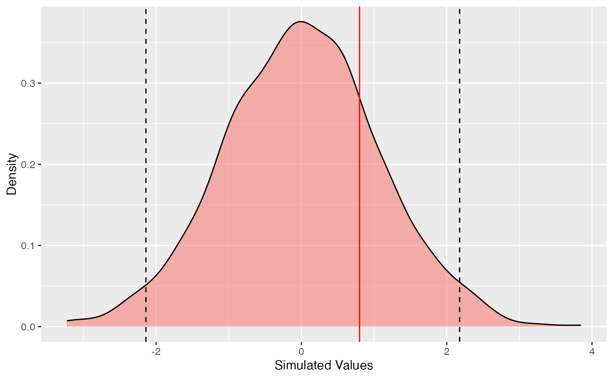

SimTest.RdMethods for objects of type "SimTest", used to test a value against its distribution under a simulated null hypothesis.
as.SimTest(RealValue, SimulatedValues)
is.SimTest(x)
# S3 method for SimTest
autoplot(object, Quantiles = c(0.025, 0.975), ...,
colValue = "red", colQuantiles = "black", ltyQuantiles = 2,
main = NULL, xlab = "Simulated Values", ylab = "Density")
# S3 method for SimTest
plot(x, Quantiles = c(0.025, 0.975), ...,
colValue = "red", lwdValue = 2, ltyValue = 2,
colQuantiles = "black", lwdQuantiles = 1, ltyQuantiles = 2,
main = NULL, xlab = "Simulated Values", ylab = "Density")
# S3 method for SimTest
summary(object, Quantiles = c(0.025, 0.975), ...)An object to be tested or plotted.
An object.
A numeric Value (the actual one).
A numeric vector containing the simulated values.
A vector containing the quantiles of interest.
The color of the line representing the real value on the plot.
The width of the line representing the real value on the plot.
The line type of the line representing the real value on the plot.
The color of the lines representing the quantiles on the plot.
The width of the lines representing the quantiles on the plot.
The line type of the lines representing the quantiles on the plot.
The main title of the plot. if NULL (by default), there is no title.
The X axis label.
The Y axis label.
Additional arguments to be passed to the generic methods.
Simulated values should be obtained by simulation. The actual value is compared to simulated quantiles. SimTest objects can be plotted and summarized.
SimTest objects are lists containing:
The value to test.
A vector of simulated values, whose quantiles will be used for the test.
is.SimTest returns TRUE if the object is of class SimTest.
summary.SimTest returns a summary of the object, including the empirical quantile of the real value in the simulated distributon.
# Set the value to test
Real <- 0.8
# Is it a realization of a Gaussian distribution?
Sims <- rnorm(1000)
# Make a Simtest object
st <- as.SimTest(Real, Sims)
summary(st)
#> Real value: 0.8
#> Quantile in the simulated distribution: 0.795
#> Quantiles of simulations:
#> 2.50% : -1.920516
#> 97.50% : 2.018792
#> Mean simulated value: 0.01245484
# Plot
plot(st)

# ggplot
autoplot(st)
